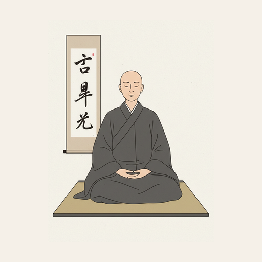
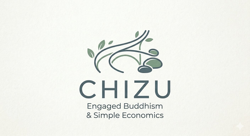
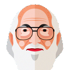
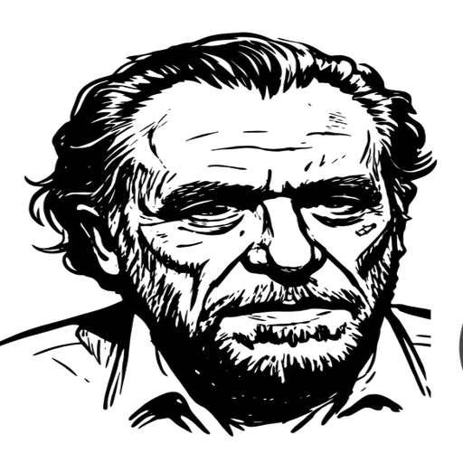

Will Thing Enterprise
Um ecossistema de Jardins de conhecimento onde Caminhantes dialogam com o pensamento humano — guiados por inteligência artificial que acompanha, nunca impõe.
O Bosque
O Bosque é o todo. Um lugar onde o conhecimento humano não é consultado — é percorrido.
Cada Jardim nasce da curadoria cuidadosa de autores e obras. A inteligência artificial atua apenas como Guia: presente, atenta, mas jamais no lugar do pensador.
O Caminhante chega com uma pergunta. O Guia acompanha. O Caminho revela o que já estava aqui, esperando ser encontrado.
O Léxico do Bosque
Os Jardins
Cada Jardim oferece uma vivência diferente. Todos fazem parte do mesmo Bosque.

Zen · Sabedoria
Mestre Zen digital — ensinamentos de Dogen, Thich Nhat Hanh, Osho e outros mestres do budismo zen para o cotidiano moderno.
chizu.ia.br →
Zen Engajado
Busca por ressonância entre 6 temas e 14 pensadores — onde prática contemplativa e ação social se encontram.
Zen Engajado · Corpus Ampliado
Busca por presença e sentido — 9 temas e 39 pensadores, com compreensão semântica e precisão lexical combinadas.

Educação · Libertação
Um diálogo vivo com o pensamento de Paulo Freire — conscientização, pedagogia do oprimido e educação como prática da liberdade.
educador.willthing.ia.br →
Literatura · Realismo Sujo
A essência de Charles Bukowski: diálogos ácidos, realismo brutal e a sabedoria das sarjetas sobre a vida, o trabalho e a arte.
buko.ia.br →Os princípios, decisões e arquitetura que orientam o Bosque — um livro vivo publicado capítulo a capítulo, à medida que o ecossistema cresce.